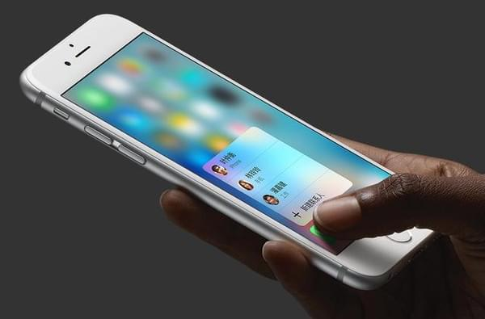

科技
关于本页面的建站说明

已经很久没有写过这样的文章了，大神勿吐槽，对于这个网站今后的发展，楼楼还是信心的...咳咳...
先说说已经采用的技术吧.首先左上角的导航栏..侬看到了么伐？这个汉堡MENU用了CSS3的transition即可以实现这样的效果,这里可以不用Animation这个属性(小题大做了,Animation适合复杂的场景和复杂的动画效果.),在此楼楼无力那些用IE8的用户,不用提IE的加载速度,IE8 css3不兼容就是一个硬伤.更不用说H5标签.